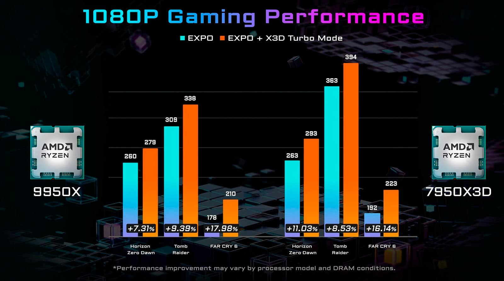
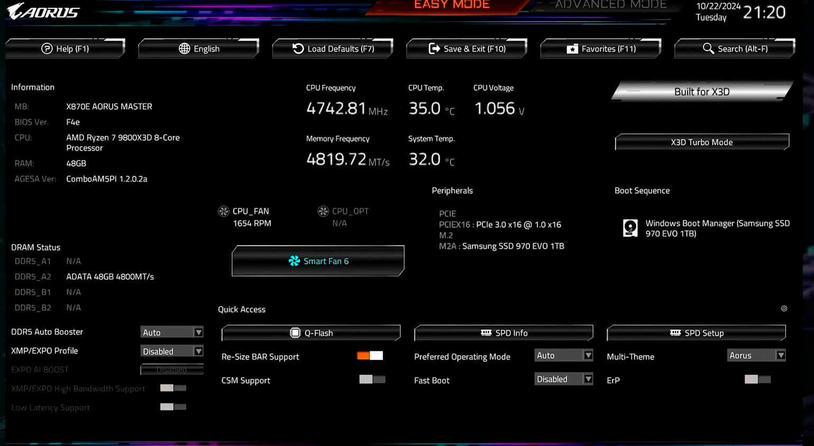

El Ryzen 7 9800X3D gana hasta un 5% de rendimiento al activar el ‘Modo Turbo’
GIGABYTE ha vuelto a filtrar detalles en torno al rendimiento del AMD Ryzen 7 9800X3D, aunque
ahora en torno a la tecnología X3D Turbo Mode. Hay que recordar que oficialmente esta tecnología
se llama oficialmente Turbo Game Mode. Salvo que cada fabricante la implementará mediante una
actualización de BIOS con el nombre de su preferencia. En el caso de GIGABYTE y AORUS: X3D Turbo
Mode. Antes que nada un breve contexto de lo que implica para antes de hablar de rendimiento.
Esta mejora llega por medio de la actualización al microcódigo AMD AGESA 1.2.0.2a, y permite
desactivar la tecnología AMD SMT eliminando los 2 hilos por núcleo de la ecuación (el homólogo
del Intel Hyper-Threading). También se aplican optimizaciones a nivel de latencias y CCD (la
parte del chip que contiene los núcleos de la CPU). En procesadores con varios CCD, como los
Ryzen 9, forzarán a que la CPU únicamente utilice un CCD. Para terminar, pese al nombre ofrecido
por GIGABYTE, los procesadores sin la tecnología 3D V-Cache también se beneficiarán de estas
mejoras, aunque más leves. Y viendo las mejoras de los X3D...
El AMD Ryzen 7 9800X3D es hasta un 5% con el X3D Turbo Mode activado

Se ha hablado muchísimo del AMD Ryzen 7 9800X3D y del rendimiento de estos perfiles Turbo Mode, y GIGABYTE lanza un jarrón de agua fría. Al activar este modo, Far Cry 6 experimenta una mejora de rendimiento del 3,56%. El Horizon Zero Dawn aumenta su rendimiento en un 4,5%, mientras que el Tomb Raider es el que más mejora con un 5,01%. Hay que tener en cuenta que estas mejoras de rendimiento son a una resolución 1080p. A medida que esta resolución aumente, la mejora será inferior.
Estas mejoras son ínfimas, ínfimas, si tenemos en cuenta que inicialmente se habían anunciado mejoras de hasta un 35%. Así que pasar de hablar de hasta un 35%, hasta un 5%.... Pues es puro humo. En la defensa de GIGABYTE, la prueba solo tiene en cuenta tres juegos, por lo que por ahí puede que haya un juego que sí mejora muchísimo más, pero sería raro. También podría ser que GIGABYTE no hubiera hecho bien las pruebas. O por qué no, quedar en una simple decepción de lo que se esperaba.
Los Ryzen 9 9950X y Ryzen 9 7950X3D mejoran algo más su rendimiento, pero con truco.

En concreto, hablamos procesadores donde se desactiva un CCD de la ecuación reduciendo las latencias. En el caso del AMD Ryzen 9 9950X, se aumenta su rendimiento en hasta un 17,98% en Far Cry 6. Pasando por un 9,39% en Tomb Raider y 7,31% en el Horizon Zero Down. El truco está en que estas mejoras de rendimiento son con unas memorias AMD EXPO. No es magia de usar únicamente el Turbo.
Por su parte, el AMD Ryzen 9 7950X3D ofrece unas mejoras de rendimiento muy similares. Hasta un 16,14% en Far Cry 6, un 8,53% en Tomb Raider, y un 11,03% en el Horizon Zero Down. Al igual que el Ryzen 7 9800X3D, el Modo Turbo no resulta impresionante. Y es que incluso con las memorias AMD EXPO no se acerca ni de lejos al rendimiento inicialmente sugerido.

Por otro lado, GIGABYTE mostró en la BIOS la confirmación de que el AMD Ryzen 7 9800X3D ofrecerá una configuración de 8 núcleos a una frecuencia de 4,70 GHz. También es interesante que utilizaron 48 GB de memoria DDR5 a 4.819 MT/s. También se muestra la temperatura, pero es poco relevante cuando estos 35ºC son mientras el sistema está en la BIOS. No durante un uso real o tras realizar pruebas de estrés.